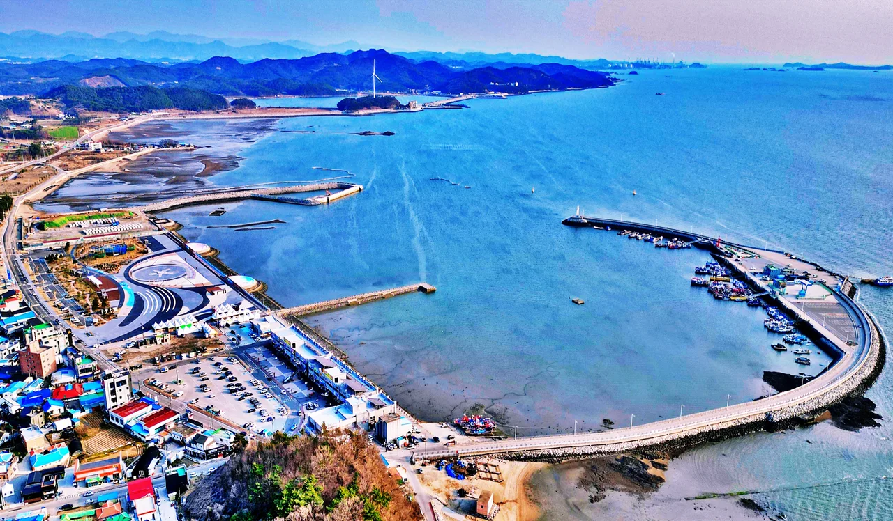

▲ 충남 홍성 남당항. 사흘 연휴로도 왕복이 가능한 거리에 있는 서해안 목적지다
추석이 금요일이면 반가운 소식처럼 들립니다. 주말과 붙기 때문입니다.
그런데 올해는 그 금요일 때문에 손해를 봅니다. 2026년 추석은 9월 25일 금요일이고, 연휴는 9월 24일 목요일부터 26일 토요일까지 사흘입니다. 그리고 대체공휴일이 없습니다.
1. 대체공휴일이 왜 없나
대체공휴일은 자동으로 붙는 제도가 아닙니다. 설과 추석 연휴는 연휴 기간이 일요일과 겹칠 때에만 대체공휴일이 발생합니다.
올해 추석 연휴는 목·금·토입니다. 일요일이 연휴 안에 들어오지 않습니다. 조건에 해당하지 않으므로 대체공휴일도 생기지 않습니다.
| 연휴 배치 | 일요일 포함 | 대체공휴일 |
|---|---|---|
| 토·일·월 | 포함 | 발생 |
| 일·월·화 | 포함 | 발생 |
| 목·금·토(2026년) | 미포함 | 없음 |
| 수·목·금 | 미포함 | 없음 |
📍 금요일 추석의 역설
추석이 일요일이면 연휴가 토·일·월이 되고, 겹친 일요일 때문에 대체공휴일이 하루 더 붙습니다.
추석이 금요일이면 연휴는 목·금·토로 끝나고, 붙는 것은 그다음 일요일 하루뿐입니다. 체감상 주말과 이어져 좋아 보이지만, 공휴일 총량으로는 손해입니다.
2. 연휴의 실제 모양
달력에 표시되는 것은 사흘이지만, 실제로 움직일 수 있는 시간은 나흘입니다. 9월 27일 일요일이 연휴 뒤에 그대로 붙기 때문입니다.
| 날짜 | 요일 | 성격 |
|---|---|---|
| 9월 23일 | 수 | 평일 |
| 9월 24일 | 목 | 추석 연휴 |
| 9월 25일 | 금 | 추석 당일 |
| 9월 26일 | 토 | 추석 연휴 |
| 9월 27일 | 일 | 주말 |
| 9월 28일 | 월 | 평일 |
▲ 전북 무주 덕유산 향적봉. 나흘이면 산 하나를 목적지로 삼을 수 있다 ⓒ 전북특별자치도 투어전북
3. 연차 한 장을 어디에 붙이나
변수는 하나뿐입니다. 연차를 앞(9월 23일 수)에 붙이느냐, 뒤(9월 28일 월)에 붙이느냐입니다. 같은 하루인데 성격이 완전히 다릅니다.
| 배치 | 기간 | 길이 | 특징 |
|---|---|---|---|
| 연차 없음 | 9/24~9/27 | 4일 | 가장 붐비는 구간을 그대로 통과 |
| 앞에 1일(9/23 수) | 9/23~9/27 | 5일 | 귀성 정체 하루 앞서 출발 가능 |
| 뒤에 1일(9/28 월) | 9/24~9/28 | 5일 | 귀경 정체를 피해 하루 늦게 복귀 |
| 앞뒤 2일 | 9/23~9/28 | 6일 | 양쪽 정체를 모두 회피 |
| 앞 4일(9/21~24) | 9/19~9/27 | 9일 | 연차 4일 소모, 장거리·해외 가능 |
이 가운데 실익이 가장 큰 것은 앞에 붙이는 하루입니다. 귀성 정체는 연휴 첫날 오전에 집중되는데, 하루 앞서 움직이면 그 구간을 통째로 비켜갈 수 있습니다. 뒤에 붙이는 하루는 귀경 정체를 피하는 대신 이미 지친 상태로 이동하게 됩니다.
4. 이동시간을 빼고 남는 시간
연휴 길이를 그대로 여행 시간으로 계산하면 어긋납니다. 왕복 이동시간을 먼저 빼야 합니다.
| 편도 이동 | 왕복 | 4일 연휴 실질 | 5일 연휴 실질 |
|---|---|---|---|
| 1시간 30분 | 3시간 | 약 3일 21시간 | 약 4일 21시간 |
| 3시간 | 6시간 | 약 3일 18시간 | 약 4일 18시간 |
| 4시간 30분 | 9시간 | 약 3일 15시간 | 약 4일 15시간 |
| 6시간 | 12시간 | 약 3일 12시간 | 약 4일 12시간 |
숫자만 보면 차이가 작아 보입니다. 문제는 그 시간이 어느 날 빠지느냐입니다. 편도 6시간이면 첫날과 마지막 날은 사실상 이동만으로 끝납니다. 나흘 연휴가 온전한 이틀로 줄어드는 셈입니다.
▲ 전북 정읍 내장산 우화정. 단풍철 직전이라 연휴에는 오히려 한산한 편이다 ⓒ 전북특별자치도 투어전북
5. 나흘로 갈 수 있는 곳
대체공휴일이 없는 해에는 목적지를 좁히는 편이 낫습니다. 이동에 쓰는 시간이 그대로 손실이기 때문입니다.
| 연휴 | 권장 편도 | 예시 지역 |
|---|---|---|
| 4일(연차 없음) | 3시간 이내 | 충남 홍성·서천, 전북 김제 |
| 5일(연차 1일) | 4시간 이내 | 전북 정읍·무주, 충남 공주 |
| 6일(연차 2일) | 5시간 이내 | 남해안·강원 영동 |
| 9일(연차 4일) | 제한 없음 | 제주·해외 |
특히 충남 홍성은 이 시기에 조건이 겹칩니다. 남당항 대하축제가 9월 4일 개막해 11월 8일까지 이어지고, 축하공연은 9월 25일과 26일, 즉 추석 연휴 안에 잡혀 있습니다.

▲ 충남 홍성 남당항. 대하축제 축하공연이 추석 당일과 그다음 날에 예정돼 있다 ⓒ 홍성군
6. 지금 해야 할 예약
연휴가 짧을수록 예약 경쟁은 심해집니다. 멀리 가지 못하니 수요가 근거리에 몰리기 때문입니다.
📍 예약에서 자주 놓치는 것
국립자연휴양림은 성수기가 아니어도 금요일·토요일·공휴일 전날 숙박은 선착순이 아니라 추첨입니다. 평일만 선착순입니다.
추석 연휴는 목·금·토여서 대부분의 날짜가 추첨 대상에 들어갑니다. 클릭 속도로 해결되지 않습니다.
섬으로 갈 계획이라면 차량 선적분을 먼저 확인해야 합니다. 여객 좌석이 남아 있어도 차를 실을 자리는 먼저 마감되는 경우가 많습니다.
마지막으로 한 가지가 남아 있습니다. 추석 연휴 고속도로 통행료 면제는 매년 시행돼 왔지만, 2026년 적용 기간은 아직 공식 발표되지 않았습니다. 출발 계획을 세울 때는 이 발표를 함께 확인하는 편이 좋습니다.